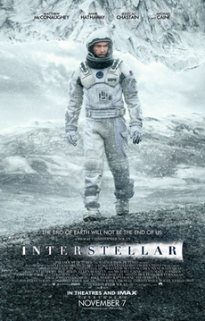
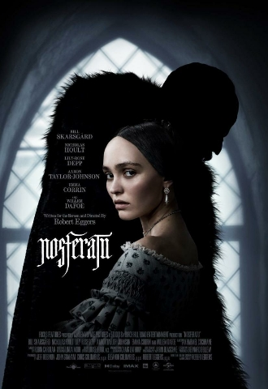
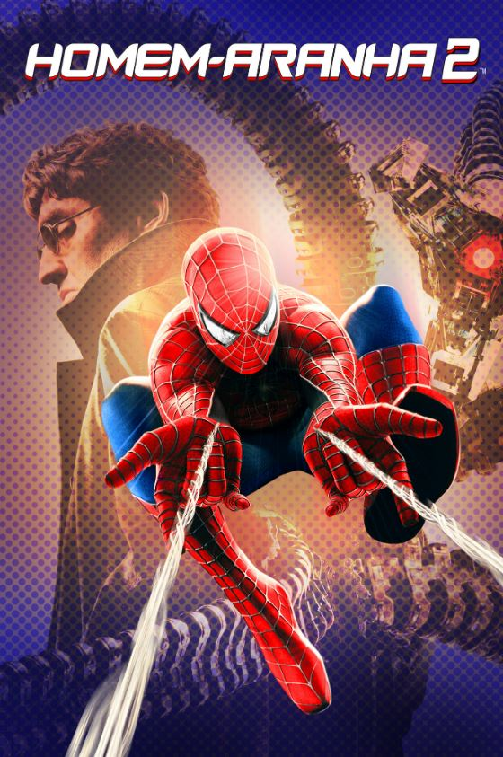

Favoritos:
-
Interstellar
Interstellar (no Brasil, Interestelar) é um filme anglo-americano de ficção científica.
Harry potter e o prisioneiro de Azkaban

O 3º ano de ensino na Escola de Magia e Bruxaria de Hogwarts se aproxima.
Recomendados:
-
Nosferatu - 2024
Nosferatu é um filme de terror gótico checo-americano de 2024.
-
Homem aranha 2
Em Homem-Aranha 2, após derrotar o Duende Verde, a vida de Peter Parker (Tobey Maguire) muda por completo.
Por genêro:
Terror:
-
Nosferatu - 2024
Fantasia e aventura
Homem aranha 2
-
Harry potter e o prisioneiro de Azkaban
Ficção:
-
Interestelar